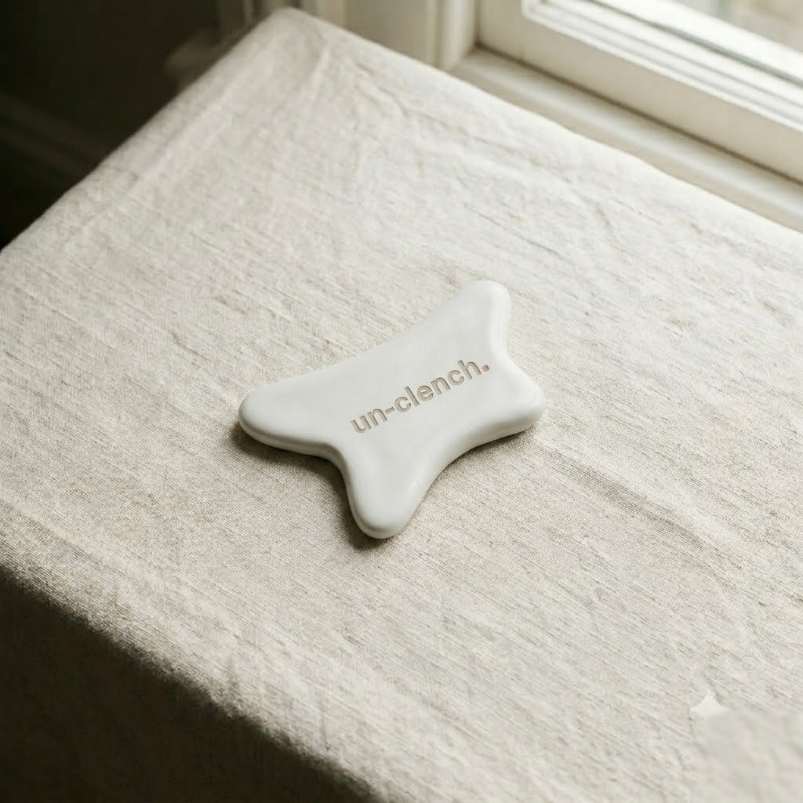

Fingers tire before a clenched masseter gives up. The Release Tool is shaped for the job — a sculpted edge for slow strokes along the jaw, a rounded point for trigger-point pressure, and a curve that fits the temple. Comes with guided video protocols so five minutes actually counts.
Un-clench is the only company that has dedicated its entire existence to jaw clenching and tooth grinding. Every hour of research, every product and every clinician we work with exists to do one thing: relieve the clench — using the latest clinical science, built to the standard of the leading experts we work with.
For slow, firm strokes from the jaw angle up toward the ear — the masseter's full length. Glides best over a thin layer of balm.
For static trigger-point pressure: find the tender spot, apply steady pressure for 20–30 seconds, breathe out, release. Repeat rather than force.
Shaped to sit flat against the temporalis for light circular work — the temple wants pressure measured in grams, not force.
Weighty enough to do the work for you, warm to the touch, and wipes clean. No coatings to wear, nothing to charge.
A manual massage tool. Use light-to-moderate pressure only; avoid the throat, broken skin and any area of acute pain. If you have TMJ dysfunction, jaw locking or unexplained facial pain, get assessed before self-massage — our assessment will route you appropriately.
Watch the three-minute protocol video first — direction and pressure matter more than effort.
Apply a thin layer of Calming Jaw Balm for glide, then sweep the long edge from jaw angle to ear, six slow strokes each side.
Find the tender points in the masseter with the rounded tip; hold steady pressure 20–30 seconds each, exhaling as you hold.
Finish with light circles at the temples using the curved face. Total: five minutes, once or twice a day.